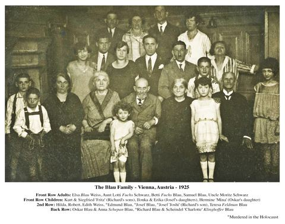

Erika Blau
1918–2005
Life events
| Born | 24 Nov 1918 · Czabaj-Cápor, Nitriansky, Slovakia Map |
|---|---|
| Lived | 1926 - 1 Jan 1938 · 1030 Löwengasse 19, Vienna, Austria Map |
| Lived | 1940 · Czabaj-Cápor, Nitriansky, Slovakia Map · Čabaj |
| Departure | 18 May 1940 · Bratislava, Bratislavsky, Slovakia Map · On the Ship Pentcho Erika, with about 500 Slovakian and Austrian Jewish refugees fleeing Nazi persecution boarded the Pentcho, an old, slow, decrepit, paddlewheel steamer. It was hired by the Revisionist Zionist organization Betar as part of the Aliyah Bet immigration effort to get to British Mandate Palestine. After chugging down the Danube, crossing a stormy Black Sea, the ship had severe mechanical breakdowns. On 9 Oct 1940, in Italian territory, its boiler exploded into the Aegean Sea. It ran aground on deserted island Kamilonissi. All passengers and crew got ashore; 5 men took the sole lifeboat to seek help, got caught in a storm, but were rescued by a British destroyer. |
| Arrival | 19 Oct 1940 · Ródos, Dodecanese, Southern Aegean, Greece Map · On the list of Czechoslovakians who arrived via ship to the island of Rhodes. Italian Royal Navy ships picked up the castaways and instead of sending them back to Nazi-occupied Europe, took them to Italian-controlled island of Rhodes, where they were and detained for over a year. |
| Lived | 14 Feb 1942 - Sep 1943 · Ferramonti Internment Camp, Cosenza, Calabria, Italy Map · with detained Jewish refugees (mild compared to Nazi camps) until Allied liberation. Most reached Palestine, but Erika married a Scottish soldier and they went to Scotland. |
| Married | 17 Jun 1945 · Bari, Puglia, Italy Map |
| Departure | 19 Jun 1948 · Southampton, Hampshire, England Map · To Canada; sponsored mother, sister + family emigration to Canada.  |
| Arrival | 25 Jun 1948 · Manhattan, New York Map |
| Lived | 1963 · British Columbia, Canada Map |
| Died | 16 Jul 2005 · Abbotsford, British Columbia, Canada Map |
| Buried | Vancouver, British Columbia, Canada Map |
Family


Unknown spouse
Photos

Anna Maria Schepan
Teresa Feldman
Josef Blau
Betti Borbola Fuchs
Samuel Blau
Ilonka 'Helen' Blau
+13 more

Teresa Feldman
Josef Blau
Ilonka 'Helen' Blau
Erika Blau

Erika Blau
Erika Blau

Erika Blau
Erika Blau
Erika Blau